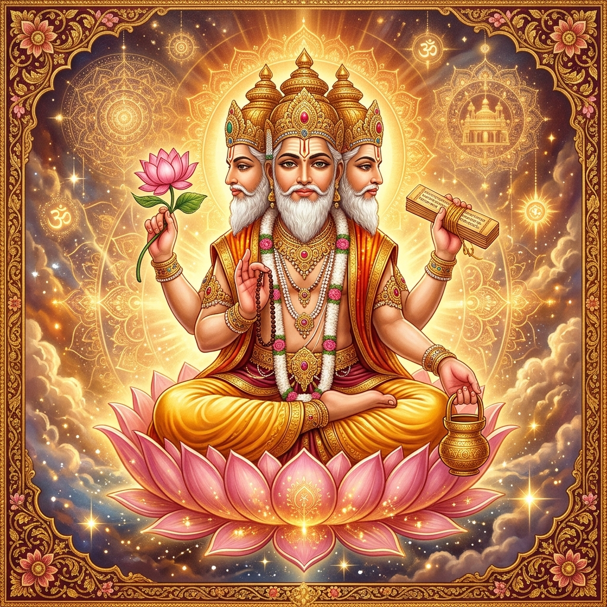
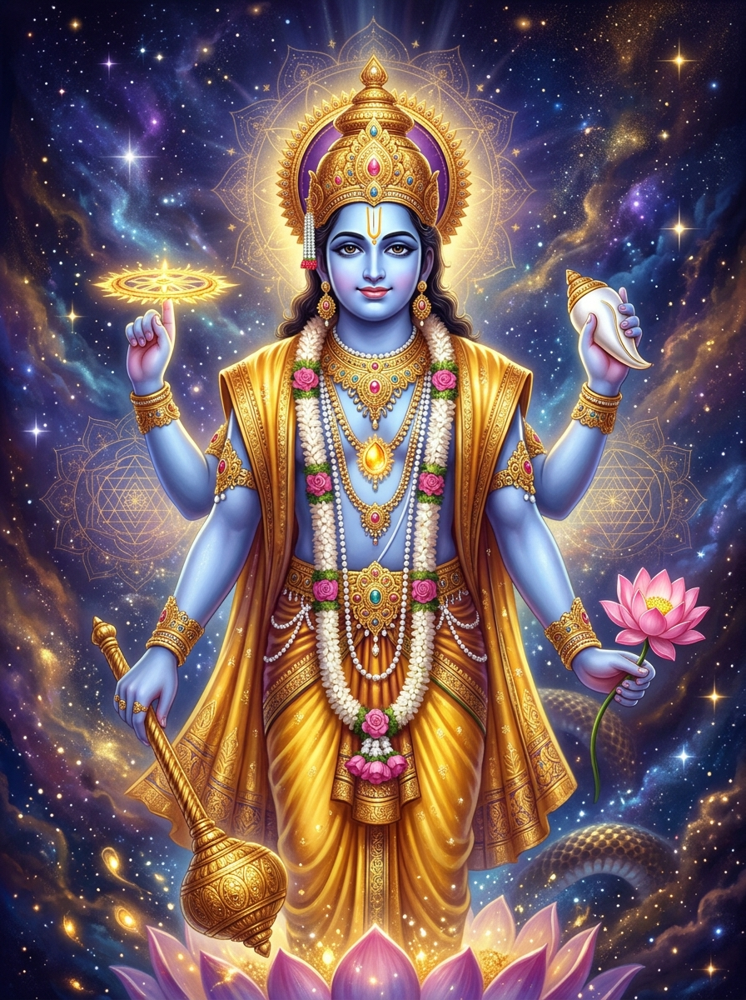
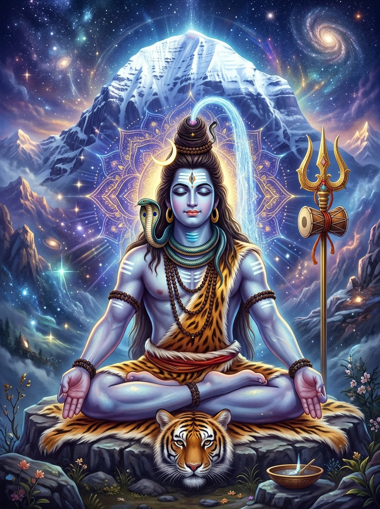
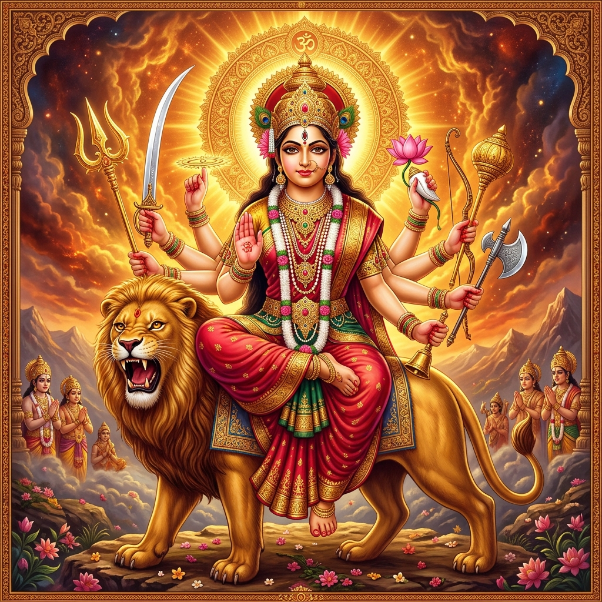
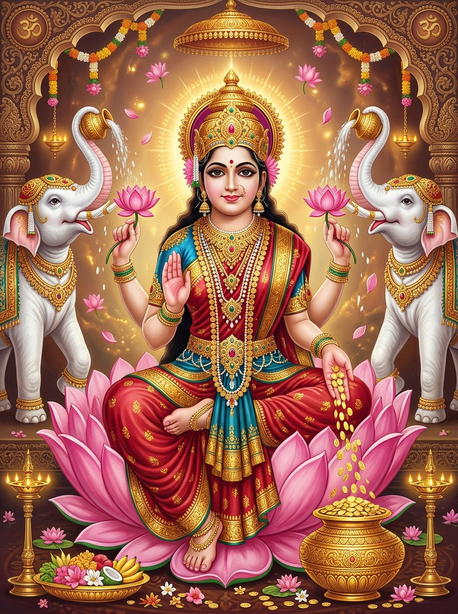
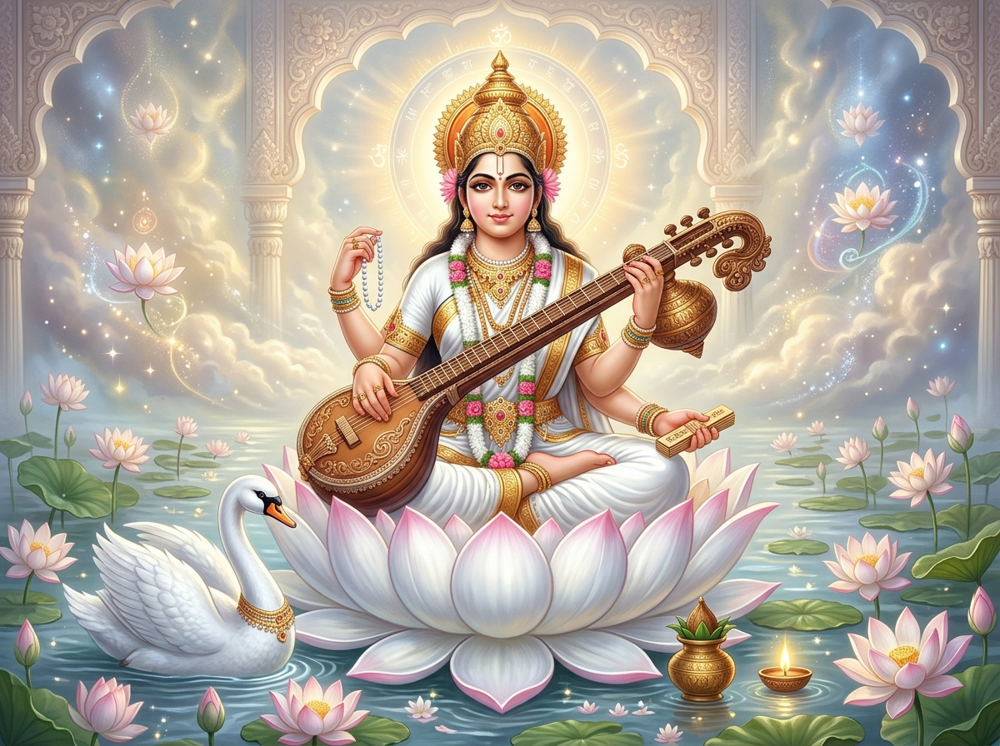
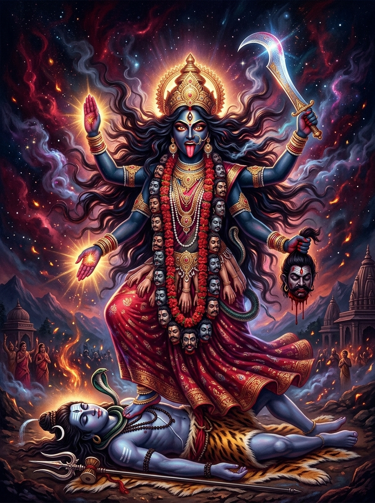
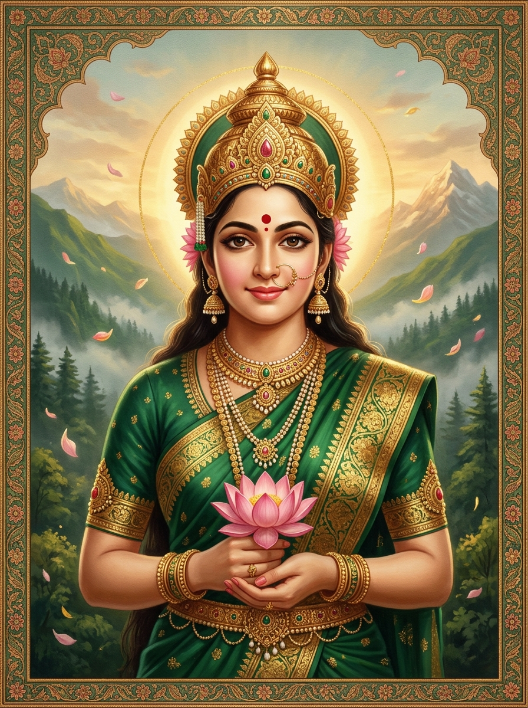
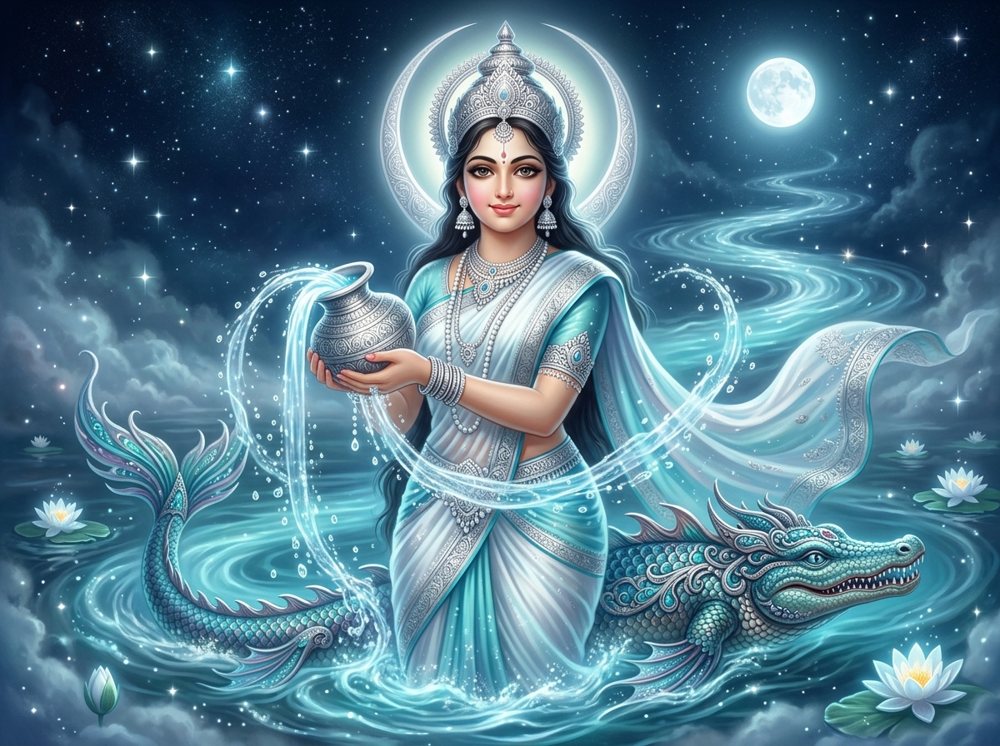

॥ ॐ असतो मा सद्गमय ॥
An immersive 3D journey through the timeless stories, divine beings,
and cosmic wisdom of ancient India
Indian mythology is one of the richest and most complex mythological traditions in the world, spanning over 5,000 years of continuous storytelling. Unlike myths of civilizations that have faded, these stories remain a living, breathing part of daily life for over a billion people.
From the cosmic dance of Shiva that creates and destroys universes, to the tender love story of Rama and Sita, from philosophical dialogues on the battlefield of Kurukshetra to the playful exploits of Krishna — these narratives explore the deepest questions of existence.
The three supreme gods who govern the cosmic cycle of creation, preservation, and destruction.

Born from a golden lotus emerging from Lord Vishnu's navel, Brahma is the creator of the universe and all living beings. With four heads facing the four directions, he speaks the four Vedas. His consort is Saraswati, goddess of knowledge.

The all-pervading supreme being who preserves the universe and restores cosmic order. Reclining on the serpent Shesha in the cosmic ocean, Vishnu descends to Earth in various avatars whenever dharma is threatened. He has incarnated ten times.

The auspicious one, the great ascetic and cosmic dancer. Shiva's Tandava dance creates and destroys worlds. Adorned with the crescent moon, the sacred Ganga flowing from his matted locks, and serpents coiled around his neck, he meditates atop Mount Kailash.
Whenever righteousness declines, Lord Vishnu incarnates on Earth to restore cosmic balance.
The great fish who saved Manu and the Vedas from a cosmic flood, guiding the boat through the deluge to safety.
The cosmic tortoise who supported Mount Mandara on his back during the Samudra Manthan — the churning of the ocean of milk.
The mighty boar who dove into the cosmic waters to rescue the Earth goddess Bhudevi from the demon Hiranyaksha.
The fierce half-man, half-lion who appeared from a pillar at twilight to slay the invincible demon Hiranyakashipu.
The dwarf Brahmin who asked demon king Bali for three steps of land, then grew to cosmic size covering heaven and earth.
The warrior sage who wielded an axe given by Shiva, ridding the earth of corrupt Kshatriya kings twenty-one times.
The ideal king of Ayodhya, embodiment of dharma. His epic journey to rescue Sita from Ravana forms the Ramayana.
The divine statesman, cowherd, and philosopher who delivered the Bhagavad Gita and orchestrated the Mahabharata war.
The enlightened one who taught the path of compassion, non-violence, and the middle way to end suffering.
The prophesied final avatar who will appear on a white horse with a blazing sword to end the age of darkness.
In Indian mythology, the feminine divine is not secondary but is the very power (Shakti) that animates the universe. Without Shakti, even the gods are powerless.

Created from the combined energies of all the gods to defeat the buffalo demon Mahishasura. She rides a lion and wields weapons gifted by each god, representing the ultimate triumph of good over evil.

Born from the churning of the cosmic ocean, seated on a lotus, she bestows wealth, fortune, and grace. As Vishnu's consort, she accompanies him in every incarnation — as Sita with Rama, as Rukmini with Krishna.

Dressed in white, seated on a swan, playing the veena — she embodies wisdom, learning, music, and the arts. She represents the free flow of consciousness and is worshipped before any pursuit of knowledge.

The fierce aspect of the divine feminine, with a garland of skulls and a tongue dripping with the blood of demons. Beyond her terrifying form lies the ultimate compassionate mother who destroys ego and illusion.

Through fierce tapas (penance), she won the heart of Shiva himself. She represents devotion, fertility, and marital felicity. Mother of Ganesha and Kartikeya, she is the gentle face of Shakti.

The celestial river brought to earth by King Bhagiratha's penance and caught in Shiva's locks to soften her fall. She purifies all sins and grants moksha — the holy Ganges is her earthly form.
Not merely stories — they are civilizational blueprints, philosophical treatises, and moral compasses.
"Like the sun, Rama illuminated the world with his virtues."
"What is found here may be found elsewhere. What is not found here will not be found elsewhere."
Indian mythology teems with extraordinary beings — divine, demonic, and everything in between.
King of birds, half-eagle half-man, sworn enemy of serpents. So radiant the gods mistook him for Agni.
Powerful serpent beings. Shesha holds the universe; Vasuki was the rope during ocean churning.
The divine monkey race. Hanuman leapt oceans, grew to cosmic size, carried a mountain.
Shape-shifting demons of immense power. Not all evil — Vibhishana was righteous.
Celestial musicians who serve in Indra's court. Their music enchants all three worlds.
Celestial nymphs of breathtaking beauty — Urvashi, Menaka, Rambha, Tilottama.
Nature spirits guarding treasures. Their king Kubera is the lord of wealth.
The white elephant with four tusks, Indra's mount, born during the ocean churning.
A universe of staggering scale — cyclic, infinite, and layered.
The oldest scriptures, eternal and authorless — revealed to sages in deep meditation:
The philosophical crown jewels — exploring Brahman (ultimate reality), Atman (self), karma, and moksha.
"Tat Tvam Asi" — Thou Art That
— Chandogya Upanishad
18 major texts containing stories of gods, creation, genealogies of kings, and cycles of cosmic time. They made Vedic philosophy accessible to all through narrative.
700 verses where Krishna reveals the nature of reality, duty, and paths to liberation.
"You have the right to work, but never to the fruit of work."
— Chapter 2, Verse 47
In the beginning there was neither existence nor non-existence. There was no atmosphere, no sky beyond. What moved? In whose keeping? Was there water, the deep abyss?
— Nasadiya Sukta, Rig Veda (Hymn of Creation, ~1500 BCE)